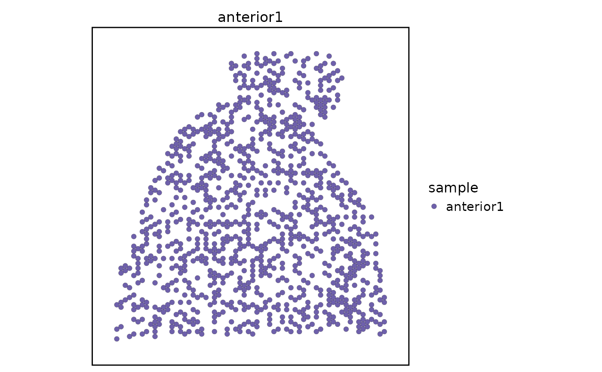

A mouse brain Visium two-slice spatial example dataset
Source:R/data.R
visium_mouse_brain_slices_sub.RdA compact two-slice subset of the 10x Genomics mouse brain serial sagittal
Visium dataset distributed as stxBrain.SeuratData. The object contains
1000 tissue spots from each of the anterior serial sections anterior1 and
anterior2, with a Spatial assay, two Visium images, and tissue
coordinates in metadata columns x and y. Metadata column sample stores
the original slice label and is intended for multi-slice spatial integration
examples that require a real sample.by column. To keep the package data
small, the object retains the top 4000 genes ranked by total counts across
the two selected slices.
Format
A Seurat object with 4000 genes, 2000 spots, and two Visium images
named anterior1 and anterior2.
Source
Derived from the 10x Genomics mouse brain serial section 1 sagittal anterior
Visium dataset distributed through
SeuratData as
stxBrain.SeuratData version 0.1.2 under the CC BY 4.0 license. The Seurat
spatial vignette describes loading these slices with
SeuratData::LoadData("stxBrain", type = "anterior1").
Examples
data(visium_mouse_brain_slices_sub)
table(visium_mouse_brain_slices_sub$sample)
#>
#> anterior1 anterior2
#> 1000 1000
SeuratObject::Images(visium_mouse_brain_slices_sub)
#> [1] "anterior1" "anterior2"
head(visium_mouse_brain_slices_sub@meta.data[, c("sample", "x", "y")])
#> sample x y
#> anterior1_AAACACCAATAACTGC-1 anterior1 8553 2788
#> anterior1_AAACAGGGTCTATATT-1 anterior1 7116 2375
#> anterior1_AAACATTTCCCGGATT-1 anterior1 8793 8156
#> anterior1_AAACCGTTCGTCCAGG-1 anterior1 7715 4371
#> anterior1_AAACCTAAGCAGCCGG-1 anterior1 9272 7193
#> anterior1_AAACGGGCGTACGGGT-1 anterior1 9272 7743
SpatialSpotPlot(
visium_mouse_brain_slices_sub,
group.by = "sample",
split.by = "sample",
image = "anterior1",
overlay_image = FALSE
)
